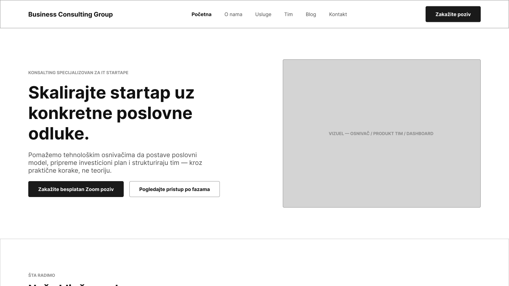
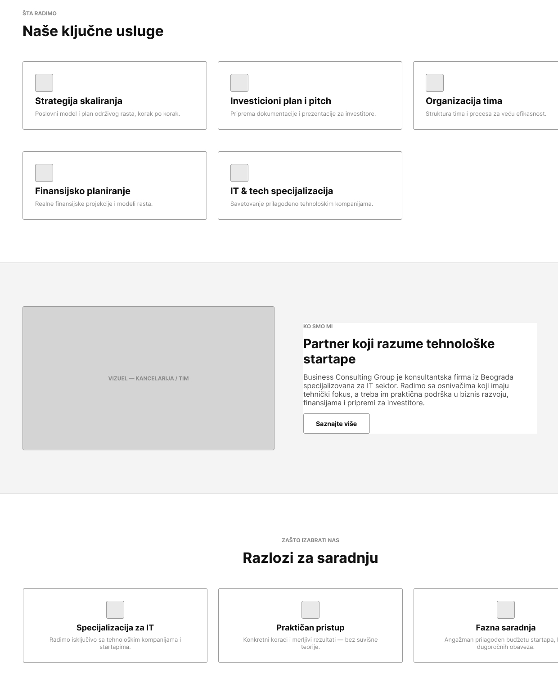
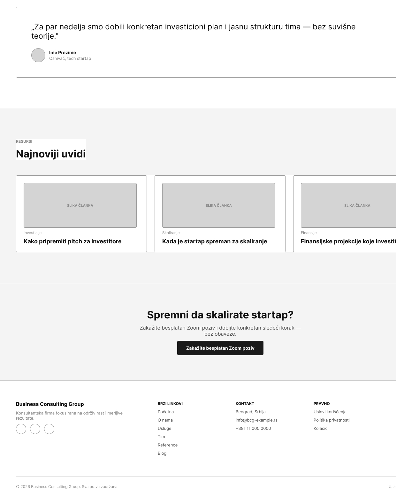

Sivi, potpuno funkcionalni wireframe za sajt IT konsultantskog startapa — postavljen pre bilo kakvog vizuelnog stila, da bi struktura i hijerarhija informacija bile jasne same za sebe.



Business Consulting Group je zamišljena kao IT startap kompanija koja klijentima nudi konsultantske usluge. Zadatak je bio da se, pre bilo kakvog uređivanja boja i tipografije, definiše kompletna struktura sajta: koje stranice postoje, šta se nalazi na svakoj od njih i kako korisnik prelazi s jedne na drugu.
Sajt je razložen na više povezanih stranica — početnu, o nama, usluge (sa pojedinačnom stranicom za svaku uslugu), tim, blog (sa pojedinačnom stranicom za svaki tekst) i kontakt. Za svaku sekciju je definisan raspored elemenata u sivim tonovima, bez finalnog vizuelnog jezika, kako bi fokus ostao isključivo na logici i čitljivosti sadržaja.